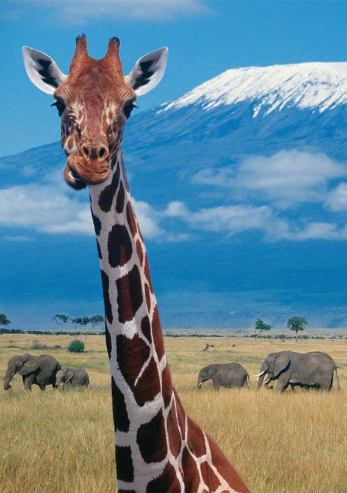

Kenia (suajili: Jamhuri Ya Kenya inglés: Republic of Kenya) es un país del este africano, que tiene fronteras con Etiopía al norte, Somalia al este, Tanzania al sur, Uganda al oeste y Sudán del Sur al noroeste, con el océano Índico bañando su costa sureste. El lago Victoria está situado al suroeste y está compartido con Uganda y Tanzania. Su capital es Nairobi. El país se extiende sobre 580.367580.367 kilómetros cuadrados de superficie y su población es de 44.350.000 personas con gente de numerosas culturas y orígenes. El nombre del país se debe al monte Kenia, un lugar tradicional del país y la segunda montaña más alta de África. Kenia también es conocida por su biodiversidad en animales y por una gran variedad de ecosistemas. Kenia tiene 47 distritos, cada uno de ellos con un gobierno semiautónomo respecto al gobierno central de Nairobi. Geográficamente, Kenia se divide en varias áreas con un demografía muy variable, existiendo zonas de sabanas, áridas y semiáridas, además de una gran costa con el océano Índico. Las regiones centrales y el occidente tienen bosques y montañas, mientras que las regiones del norte son más áridas.
Como parte del Este de África, Kenia ha sido hogar del hombre desde el Paleolítico Inferior. La expansión bantú alcanzó el área en el primer milenio antes de nuestra era, y los límites del estado moderno comprenden los pasos de las áreas lingüísticas y culturales del Nilo-Sahariana, la afro-asiática y la bantú, por lo que Kenia ha sido un país multiétnico desde sus orígenes. La presencia europea y árabe en Mombasa se remonta a los principios de la Edad Moderna, pero la exploración del interior comenzó en el siglo XIX. El Imperio británico estableció el Protectorado del Este de África en 1895, conocido como la Colonia de Kenia desde 1920. La República Independiente de Kenia se estableció en 1963.
Algunos fósiles encontrados al este de África sugieren que protohumanos rondaron el área de la actual Kenia más de veinte millones de años atrás. Hallazgos recientes en las cercanías del lago Turkana indican que homínidos como el Homo habilis y el Homo erectus habitaron en el territorio más de 2,6 millones de años atrás.
La historia colonial de Kenia comienza con el establecimiento de un protectorado alemán sobre las posesiones costeras del sultán de Zanzíbar en 1885, seguido por la llegada de la Compañía Británica de África Oriental en 1888. La incipiente rivalidad imperial terminó cuando Alemania otorgó sus posesiones costeras a Gran Bretaña en 1890, a condición de que ésta respetase su dominio sobre sus recientemente adquiridas posesiones en la actual Tanzania.
A partir de octubre de 1952 y hasta diciembre de 1959, Kenia se mantuvo bajo un estado de emergencia como consecuencia de una rebelión en contra del dominio británico. Las primeras elecciones directas de africanos para el Consejo Legislativo se llevaron a cabo en 1957. A pesar de las esperanzas británicas de otorgar el mando de la nación a un grupo de líderes africanos "moderados", fue la Kenya African National Union (KANU), de Jomo Kenyatta la fuerza política que formó el primer gobierno luego de la independencia de Kenia el 12 de diciembre de 1963. Kenyatta se convirtió en el máximo dirigente del país en un principio como primer ministro y, a partir de 1964, cuando Kenia se convirtió en república, como primer presidente de la República.